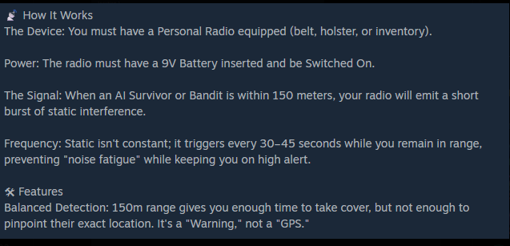

Scavenge your essentials
Food and medicine are find-only on this server. Search houses, clinics, hunting routes and other appropriate loot areas. Save what you find—don't plan on buying a quick refill.
Everything a survivor needs to know before heading into hard AI territory: medical signs, base building, warning radios, crafting and field-tested basics.
Deer Isle rewards preparation more than risky loot runs. Your first objective is staying alive long enough to bring something home.
Food and medicine are find-only on this server. Search houses, clinics, hunting routes and other appropriate loot areas. Save what you find—don't plan on buying a quick refill.
Mark an objective, an exit route and a fallback point before entering dangerous areas. Keep inventory space free for the items you actually need.
Heavy bags and overpacking can cost you an escape. Carry useful kit, not every weapon you discover. Check footwear, warmth and hydration regularly.
Store extra bandages, repair items, food, water containers and a second field kit in your base. A prepared recovery loadout makes your next trip easier.
High-accuracy AI and hostile creatures can punish careless movement. Valuable AI loot is not worth a blind rush into the open.
Use solid cover, buildings and terrain. After being spotted, reposition rather than repeatedly peeking from the same corner.
Stop short, listen, identify multiple threats, check for flanking routes and plan where you will retreat if the fight turns.
Keep distance, preserve stamina and retreat when outnumbered. Avoid unknown close-range attacks, especially while injured or low on ammo.
Carry bandages and a clean treatment kit. Terje medical mechanics can make wounds more complex than a single bandage fixes.
A simple Personal Radio can warn you about nearby AI Survivors and Bandits—provided you set it up correctly.
Keep a Personal Radio equipped on your belt, in a holster, or in your inventory.
Insert a 9V battery and switch the radio On.
When an AI Survivor or Bandit comes within 150 meters, the radio emits a short burst of static interference.
While you remain in range, the static triggers approximately every 30–45 seconds. It is intentionally not constant to avoid noise fatigue.

Monitor new injuries, diseases and temporary effects carefully. The medical overhaul can introduce complications that vanilla DayZ does not.
Use this legend to identify the categories of Terje icons shown in the reference image. An icon signals a condition or active effect—consult the official guide for the correct treatment.

This table shows which donor red blood cell types can be given to each recipient blood type, matching your reference chart.
| Recipient ↓ Donor → | O− | O+ | A− | A+ | B− | B+ | AB− | AB+ |
|---|---|---|---|---|---|---|---|---|
| O− | ||||||||
| O+ | ||||||||
| A− | ||||||||
| A+ | ||||||||
| B− | ||||||||
| B+ | ||||||||
| AB− | ||||||||
| AB+ |

Gather the right components before construction. All seven custom house costs plus the RaG Hunting Cabin are included exactly as provided.
Choose a building to generate the exact gathering list.
Tap a material to mark it as collected. Checkmarks are temporary and reset when you refresh.
| Building | Nails | Wooden Planks | Wooden Logs | Stones | Metal Wire | Metal Plates |
|---|---|---|---|---|---|---|
| House A | 70 | 50 | 16 | 28 | 5 | — |
| House B | 50 | 40 | 12 | 24 | 6 | — |
| House C | 60 | 50 | 14 | 26 | 7 | — |
| House D | 40 | 30 | 10 | 22 | 8 | — |
| House E | 80 | 30 | 18 | 30 | 9 | — |
| House F | 90 | 45 | 20 | 32 | 10 | — |
| House G | 200 | 50 | 50 | 50 | 15 | 10 |
| RaG Hunting Cabin | — | 30 | 20 | 32 | — | — |
Interested in the server's fictional black-market crafting loop? The iM7s mod has its own illustrated reference covering cultivation, recipes, workstations and gameplay mechanics.
See the mod creator's documentation for supported in-game items, crafting stations, recipes, cultivation and mod-specific effects. The mod uses the IAT Crafting Plus framework for complex workstation recipes.
Quick habits that save equipment, reduce deaths and keep your expedition within community rules.
Running and shooting attract unwanted attention. Stop, listen, scan windows and move between cover before approaching high-risk loot.
You don't need to win every AI fight. If you're low on ammo, food, blood or stamina, reset the engagement instead of gambling your inventory.
Medical items and food must be scavenged. Carry only what your journey needs, but preserve a clean backup kit at home.
Claim an airdrop before pursuing it. If you die trying to obtain the drop, your claim resets and others may pursue it.
Use flag poles or designated trader parking signs for garage storage. Vehicles left out can be removed under the server's cleanup policy.
Never dump unwanted loot just to force fresh spawns. Loot cycling is prohibited; if you don't find what you want, move on.
Measure the required distances from traders and all military assets. Avoid POIs, bridges, ladders, loot points and other players' entrances.
Review server announcements and the rules, and use the community Discord for mod-specific questions and updates.
Take what you need, choose your route, and come back with a story worth telling.